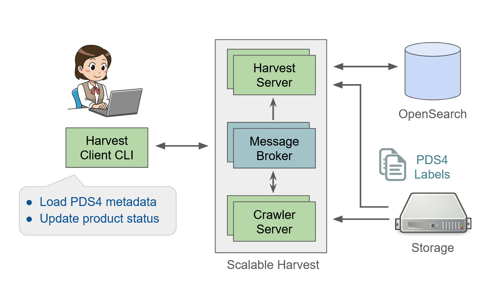

About PDS Registry
PDS Registry provides functionality for tracking, searching, auditing, locating, and maintaining artifacts within the system. These artifacts can range from data files and label files, schemas, dictionary definitions for objects and elements, services, etc. The core functionality for this component is satisfied by OpenSearch.
The high level architecture of PDS Registry and its main components is shown below.

OpenSearch
OpenSearch is a NoSQL database based on Apache Lucene project, optimized for text search. All metadata extracted from PDS4 labels is storted in OpenSearch database.
Harvest
Harvest is a software to crawl and extract metadata from PDS4 labels and to load extracted information into OpenSearch. There are two versions of Harvest:
Standalone command-line tool.
Scalable Harvest.
Standalone Harvest
A command-line tool which doesn’t require complex installation and configuration. This tool is recommended for small data sets of up to 5,000-10,000 of PDS4 labels.
Scalable Harvest
Scalable Harvest consists of several server components: RabbitMQ message broker, Crawler server, and Harvest server. These components can be deployed in the cloud or on-prem. Also there is a Harvest Client command-line tool to submit jobs to server components asynchronously. This setup is recommended if you want to process big data sets in parallel.
Registry Manager
A command-line tool to perform admin tasks on a Registry, such as:
Create or delete registry indices in OpenSearch.
Manage registry data dictionary.
Update product archive status.
API
Provides read-only REST APIs to search and access PDS data. You can call REST APIs directly or use Python or Java clients. More information about PDS API clients is available here.